This document describes a sophisticated multi-agent cryptocurrency trading system built with the agent-swarm-kit framework. The system implements a specialized trading bot that provides long-term cryptocurrency investment advice and calculations for Bitcoin, Ethereum, Binance Coin, Ripple, and Solana.
The trading bot demonstrates advanced multi-agent orchestration, specialized tool integration, and persistent order tracking. For information about the core agent-swarm-kit framework components, see Core Components. For general usage patterns, see Usage Patterns.
The trading bot implements a hub-and-spoke architecture with a central triage agent coordinating access to specialized cryptocurrency traders. Each trader agent focuses on a single cryptocurrency and maintains its own order history and market analysis capabilities.

The system defines six specialized agents through the AgentName enum and corresponding addAgent calls. Each agent has specific responsibilities and tool access patterns.
| Agent | Purpose | Cryptocurrency | Tools Available |
|---|---|---|---|
TriageAgent |
Route users to appropriate trader | All | Navigation tools only |
BtcTraderAgent |
Bitcoin trading specialist | BTC | Buy/sell calculation, trend analysis, navigation |
EthTraderAgent |
Ethereum trading specialist | ETH | Buy/sell calculation, trend analysis, navigation |
BnbTraderAgent |
Binance Coin trading specialist | BNB | Buy/sell calculation, trend analysis, navigation |
XrpTraderAgent |
Ripple trading specialist | XRP | Buy/sell calculation, trend analysis, navigation |
SolTraderAgent |
Solana trading specialist | SOL | Buy/sell calculation, trend analysis, navigation |

The trading bot implements a comprehensive tool system through the ToolName enum, providing specialized functionality for trading calculations, market analysis, and agent navigation.
The system provides two primary calculation tools that interact with external APIs to determine optimal buy and sell quantities:
CalculateBuyPriceQuantityTool: Computes price and quantity for market buy orders based on USD amountsCalculateSellPriceQuantityTool: Determines price and quantity for market sell orders based on USD amountsBoth tools validate the cryptocurrency matches the current agent's specialization and store order data in OrderStorage for future analysis.

The system provides two analytical tools for market intelligence:
CalculateMarketTrendTool: Retrieves 7-day candle data and predicts long-term trends (UP/DOWN)CalculateAverageCoinPriceTool: Calculates average cost and profit/loss from historical orders
The system implements bidirectional navigation between the triage agent and specialized traders through dedicated navigation tools:
NavigateTo[Coin]TraderTool: Routes from triage to specific trader agentsNavigateToTriageTool: Returns to triage agent from any trader
The trading bot implements persistent order tracking through the OrderStorage system, utilizing embedding-based search for efficient order retrieval and analysis.
The system defines a structured order schema through the IOrderSchema interface:
interface IOrderSchema {
id: number;
type: "buy" | "sell";
quantity: string;
price: string;
coin: string;
}
The OrderStorage is configured with embedding-based indexing using the NomicEmbedding system powered by Ollama's nomic-embed-text model:

The trading bot integrates multiple AI systems for natural language processing and semantic search capabilities.
The system uses OpenAI for natural language processing through the OpenAiCompletion adapter:

The system implements semantic search through Ollama's embedding capabilities:

The trading bot provides a simple REPL (Read-Eval-Print Loop) interface for direct interaction with the trading system.
The interface implements a continuous loop that displays the current active agent and processes user commands:

The trading bot implements a sophisticated execution flow that handles user requests through multiple agents and tools while maintaining context and state.

The trading bot requires specific configuration for AI services, TensorFlow backend, and external APIs.
| Dependency | Purpose | Configuration |
|---|---|---|
agent-swarm-kit |
Core framework | Version 1.0.230 |
openai |
Natural language processing | CC_OPENAI_API_KEY environment variable |
ollama |
Embedding generation | Local Ollama instance with nomic-embed-text |
@tensorflow/tfjs-core |
Vector similarity calculations | WASM backend |
node-binance-api |
Cryptocurrency market data | Binance API integration |
The system configures TensorFlow to use WebAssembly backend for optimal performance in Node.js environments: